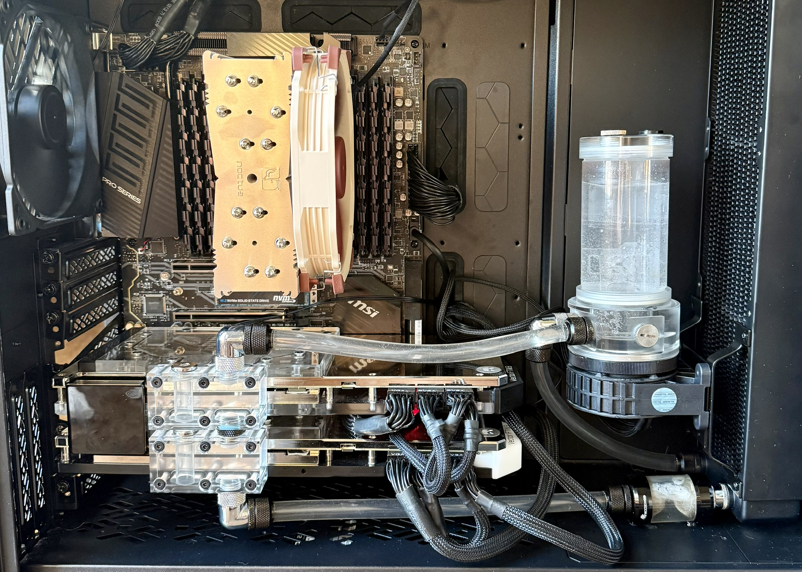

Four months ago, every pass of agentic cleanup over the OpenStreetMap extract I use for my geocoder cost me around $400 in API spend. Today the same job runs on the box under my desk and the only line item is the electricity bill. This post is about the hardware that made that swap possible, what it's actually good for, and where the math still doesn't work.
The hardware
The machine ("ripper") is built around a Threadripper 3970X (32 cores) on an MSI TRX40 PRO 10G with 256GB of DDR4. The GPUs are a pair of RTX 3090s bridged with NVLink — one watercooled, one air-cooled — which gives me 48GB of pooled VRAM for the models that don't quite fit on a single card.

- 2x NVIDIA RTX 3090 24GB, NVLink bridged
- AMD Threadripper 3970X, 32 cores
- MSI TRX40 PRO 10G motherboard
- 256GB DDR4 (non-ECC — more on that later)
- Sustained inference temps hover around 50°C
One detail worth calling out: the GPUs are seated in the third and fourth PCIe slots, which on this board are wired x16/x8. That sounds like a downgrade until you remember NVLink — the bridge gives the cards ~112 GB/s of direct GPU-to-GPU bandwidth, which dwarfs anything PCIe is going to give you for cross-card traffic anyway. In practice this config beats a "proper" x16/x16 layout without NVLink for any workload that shards across both cards.
The bonus is that the top x16 slot stays open for a future two-slot card, and — more practically — two-slot NVLink bridges are much cheaper and easier to find than the three- or four-slot variants. If you're building a similar rig today, pick your slot spacing around what bridge you can actually buy.
What it cost
The whole thing came in under $4k for the core components, mostly because none of the headline parts were bought new:
| Part | Price | Source |
|---|---|---|
| 2× RTX 3090 (both watercooled) | $2 000 | Facebook Marketplace |
| Threadripper 3970X + MSI TRX40 PRO 10G + 256GB RAM | $1 200 | Marketplace, "broken" |
| Case | $230 | Retail |
| NVLink bridge (2-slot) | $200 | Retail |
The board-and-CPU deal is the fun story. The previous owner had the machine literally fall off the roof of a car in transit, decided it was scrap, and listed the combo at a steep discount with the 256GB of DDR4 still in the slots. When I picked it up nothing would post — but almost nothing was actually broken either. Every socketed component had partially walked out of place from the impact: the CPU in the socket, the DIMMs, the M.2 in its slot, the GPU. Reseating each one took about ten minutes. One of the eight memory sticks turned out to be genuinely dead and had to be replaced (~$220 for a matched module — more on RAM prices later), but everything else was fine. A 32-core Threadripper, a workstation board with 10G ethernet, and 256GB of RAM for $1 260 all-in is the kind of price you only get when the seller has already grieved the loss.
The 3090s were a luckier-than-deserved find too: a local crypto-mining operation was winding down and offloaded a pair of EK-blocked cards together. Watercooling is a meaningful upgrade for sustained inference — under all-day load they sit around 50°C where the air-cooled reference cards I'd seen used were thermal-throttling into the 80s.
The NVLink bridge is the one line item that hurts: $200 of plastic and a few traces, and you basically have to buy it from a scalper because NVIDIA stopped making them. But for any workload that shards across both cards (tensor-parallel inference, FSDP training) the bridge pays for itself in not having to do cross-card traffic over the PCIe root complex.
Excluded from the table: PSU, storage, fans, fittings, the inevitable second loop of fittings after the first ones leaked, and the one replacement memory stick. Call it another $400–500 on top. So a fair all-in number is around $4 100 for a workstation that comfortably serves a 35B MoE at 5 400 tok/s.
What it's good for
Two workloads pay for this machine. The first is fine-tuning small models — 2B to 8B parameters, mostly LoRA and full-SFT runs that finish overnight. The second is running long agentic jobs against the served model: in particular, cleaning and normalizing OpenStreetMap data for the geocoder, which means tens of millions of LLM calls per pass. That kind of token volume is exactly the wrong shape for paid APIs (lots of cheap, parallel, latency-tolerant requests) and exactly the right shape for a local server.
For serving, a 27B dense quant or a 35B MoE quant fits comfortably across both cards. A 14B at fp16 fits with room for KV cache. Anything 70B-class needs offloading and gets painful fast — at that point I'd rather just rent an H100 for the afternoon than fight it.
The software stack
The stack is PyTorch for training, vLLM for serving, and a small pile of local patches for the things that don't quite work out of the box on Ampere. The one footgun worth calling out up front: anything that touches Triton wants CC=gcc in the environment, or the conda-shipped compiler will fight the system Python headers and produce error messages that look unrelated to the actual problem. I've burned an entire evening on this twice now; it's the first thing I check when a fresh env explodes.
For agentic workloads, the OSM cleanup pipeline talks to vLLM over its OpenAI-compatible endpoint, so the same orchestration code I used to send to the paid API just points at localhost:8000 instead. The 5 400 tok/s of aggregate throughput from the benchmarks above is the actual ceiling that pipeline runs against.
The non-ECC RAM problem
The 256GB of DDR4 in this box is non-ECC. I didn't think about it at build time — the sticks came with the marketplace bundle and I was excited to have 256GB at all — but it's the kind of thing that nags at you once you're running multi-day training jobs. Bit flips would be silent. The TRX40 platform doesn't expose amd64_edac, so the kernel has no visibility into memory errors even if they were happening. The only real check is a software memtest, which means taking the machine down for hours.
I had a stretch of unexplained training crashes earlier this month that sent me down this rabbit hole — loss spikes that didn't reproduce, an OOM that came back clean on re-run, that sort of thing. ECC turned out to be a red herring: memtest86+ found a single bad stick out of the eight, I swapped it for a matched replacement, and the crashes stopped. The replacement was $220 for one 32GB module — RAM prices in 2026 are genuinely brutal, and an obscure-brand match for a six-year-old kit is not a cheap part anymore. The lesson wasn't "I need ECC" so much as "without ECC I had to take the machine down for hours of memtest to confirm what ECC would have flagged in seconds." Still going on the next-build list.
Benchmarks: MoE vs. dense at the same memory budget
To put numbers on what the rig actually delivers, I served two recent Qwen models with vLLM 0.20 (TP=2) and ran the canned vllm bench serve suite against each: Qwen3.5-35B-A3B (a 35B-parameter mixture-of-experts model with ~3B active per token, GPTQ Int4) and Qwen3.6-27B (a 27B dense model, AWQ Int4). Both at 16-bit KV cache. The MoE has more total parameters but only touches a fraction of them per token; the dense model is "smaller" by parameter count but every weight gets read every step.
Single-stream latency (warm, 512-in / 256-out)
| Model | Output tok/s | TTFT (ms) | Median ITL (ms) |
|---|---|---|---|
| Qwen3.5-35B-A3B (MoE, 3B active) | 150 | 66 | 6.3 |
| Qwen3.6-27B (dense) | 63 | 279 | 14.3 |
Per-token decode is memory-bandwidth bound: the 35B-A3B only has to stream ~3B parameters out of HBM each step, while the dense 27B reads all 27B. The 9× ratio in working set doesn't quite translate 1:1 (there's constant overhead per step), but you can see it clearly in both the output rate and the inter-token latency. The MoE's TTFT is also lower because prefill is compute-bound and the active-parameter count drives FLOPs.
Parallel throughput (1024-in / 256-out, 500 prompts)
| Config | Total tok/s | Output tok/s | Median TTFT | P99 TTFT | Median TPOT |
|---|---|---|---|---|---|
| 35B-A3B, conc=16 | 4 481 | 896 | 0.62 s | 1.2 s | 15 ms |
| 35B-A3B, conc=32 | 5 417 | 1 083 | 0.72 s | 10.3 s | 25 ms |
| 27B dense, conc=16 | 1 601 | 320 | 0.98 s | 12.6 s | 45 ms |
| 27B dense, conc=32 | 1 817 | 363 | 2.74 s | 13.5 s | 76 ms |
The 27B saturates much earlier. Going from concurrency 16 to 32 only buys it 13% more throughput while pushing median TTFT from 1 s to 2.7 s — past its knee. The 35B-A3B is still climbing at 32 (and falling apart in tail latency, P99 TTFT of 10 s, but throughput-wise it's fine). For an interactive workload, the 35B-A3B's sweet spot on this hardware is around concurrency=16–24. For batch jobs where only total throughput matters, push it higher.
KV cache also matters here. The 27B at --gpu-memory-utilization 0.85 with default 16-bit KV gets 61 152 tokens of cache total — enough for ~3.6 concurrent 65k requests, but at 32-way concurrency with 1 280-token contexts it's running near the edge. Switching to FP8 KV would double that with negligible quality cost.
Prefill: how prompt processing scales
For the 35B-A3B, I swept input length with output_len=1 so prefill dominates, then divided input tokens by TTFT:
| Input length | TTFT (ms) | Prefill tok/s |
|---|---|---|
| 512 | 333 | 1 536 |
| 1 024 | 510 | 2 007 |
| 2 048 | 913 | 2 242 |
| 4 096 | 1 838 | 2 228 |
| 8 192 | 4 061 | 2 017 |
| 16 384 | 8 570 | 1 911 |
| 32 768 | 19 161 | 1 710 |
The shape is the expected one: short inputs don't saturate the kernels, the sweet spot lands around 2–4k tokens where everything's busy, and at 32k tokens you're firmly in attention-dominated territory and prefill drops ~25% from the peak.
Single-stream peaks around 2 240 tok/s. With concurrency, the aggregate prefill jumps to about 12 100 tok/s — measured at both 2 048 and 4 096 input length with conc=32, which means I've hit the compute ceiling for this quantization on 2× 3090. Doubling the input didn't move the aggregate; it just doubled the per-request TTFT (5.2 s → 10.5 s). That's the GPU-bound regime.
What it costs to run
I checked the wall meter under the parallel benchmark: the whole machine peaks at 1.04 kW. Per-token energy depends entirely on whether you're batching:
- Single-stream (150 tok/s): about 6.9 J/token
- Batch at concurrency=32 (5 417 tok/s total): about 0.19 J/token
That's a 36× swing from the same hardware — a strong argument for queueing requests where you can, and for treating "1 W per active token" as a rough lower bound when sizing power budgets.
The takeaway
On 2× 3090, a 35B-A3B MoE quantized to Int4 beats a 27B dense Int4 on every axis that matters: single-token latency, parallel throughput, prefill speed, and tail behavior. The MoE's smaller active set is the right architectural bet for memory-bandwidth-constrained consumer hardware, and the dense model's "smaller" parameter count is misleading once you account for what actually gets read every step. If you're picking what to serve locally and you have the VRAM for the full weights, prefer MoE quantizations.
What I'd do differently
ECC, for the reasons above. A board that exposes amd64_edac would be nice too — even without ECC, knowing whether the memory is misbehaving is a strict upgrade over guessing. I'd also leave room for a third GPU; the wattage budget on the PSU could support it and the 35B-A3B numbers above already suggest I'd happily feed a bigger MoE more VRAM. Beyond that, the honest answer is "stop building and rent H100s for the workloads that need them." This rig is great at the workloads that fit; for everything else, it's a slower, hotter version of a managed instance.
Was it worth it?
The numbers I care about: the OSM cleanup pass that used to cost me $400 in API spend now costs roughly a dollar of electricity per run (1 kW × ~10 hours × $0.11/kWh, give or take). The rig paid for itself in about ten runs. More importantly, the marginal cost of "let me re-run that with a slightly different prompt" went from "do I really want to spend $400 on this?" to "sure, kick it off before bed." That second number is the one that changed how I work.
The honest caveat is that this only holds for workloads that fit on 48GB of VRAM and don't need a frontier model to be useful. The day I need a 200B+ model in the loop, I'll be back on someone else's hardware. But for fine-tuning small models and grinding through large agentic jobs against a quantized 30B-class server, the box under my desk has been the best dollar-for-dollar bet I've made on this project.